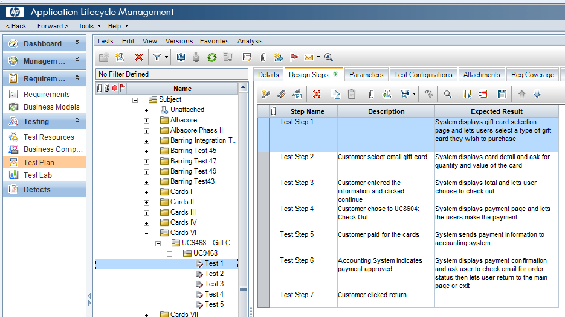

Livré avec les piles
Aujourd’hui vient avec PIP
Multi-plateforme
Simple à prendre en main
ensemble1 = set((l.strip() for l in open("fichier1").readlines()))
ensemble2 = set((l.strip() for l in open("fichier2").readlines()))
with open("difference.txt", "w") as f:
f.write('\n'.join(sorted(ensemble1.difference(ensemble2))))Je récupère le WSDL
Je récupère la documentation code au format XML
Je croise le tout pour sortir du HTML
Je transforme ça en Word avec pandoc
requests
BeautifulSoup
Pandoc

Contexte : traitement d’alimentation d’un entrepôt de données
- Une méthode par type de vérification
- Le Python scanne les méthodes et leurs paramètres
- Il me les traduit en tests dans un fichier texte
- J’ai plus qu’à copier coller dans l’outil et valider les campagnes de tests (merci Vim)
Contexte : test d’API REST
- Mes cas de tests sont stockés sous forme de listes et de dicts dans un fichier Python.
- Ils sont récupérés par des tests py.test pour tester l’API
- Ils sont traduits en cas de test que je peux copier coller dans l’outil
Les piles de python…
Requests pour les tests d’API
Vim pour aller vite dans les copier coller :-)
Mise en place d’un logger pour tracer nos appels avec un formalisme précis
Transformation en représentation sous forme de fichier plat
Utilisation de seqdiag
Je me contente de saisir le nombre de jours par livrable.
Je code le calcul du devis financier et la génération du document.
Ce qu’on faisait avant :
- Exporter la liste des tâches en CSV depuis Excel.
- Virer les accents, les lignes multiples, les virgules.
- Charger en deux fois avec l’outil d’import CSV de la forge.
- Rager parce que ça na pas marché et qu’il faut revoir le CSV.
Je suis passé par là…
- Récupèration des infos dans le fichier Excel.
- Création de la hierarchie de tâches dans l’outil en utilisant l’API SOAP.
openpyxl
SUDS
Ce qu’on faisait avant :
- On obligeait les gens à indiquer dans le ticket les dates de création, prise en compte, livraison.
- On copiait les tickets dans une feuille Excel.
- On faisait de la « magie » pour sortir des indicateurs.
Je suis passé par là…
- Récupération des tickets au travers de l’API SOAP.
- Calcul des temps de traitement en fonction des dates de changements d’état des tickets.
- Génération d’un csv (à l’époque) chargé dans Excel.